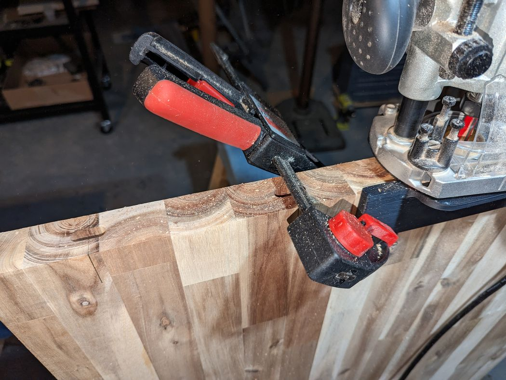
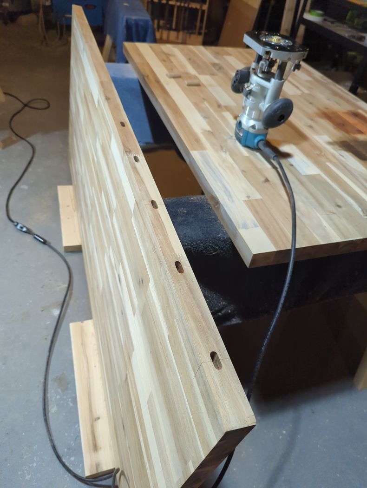
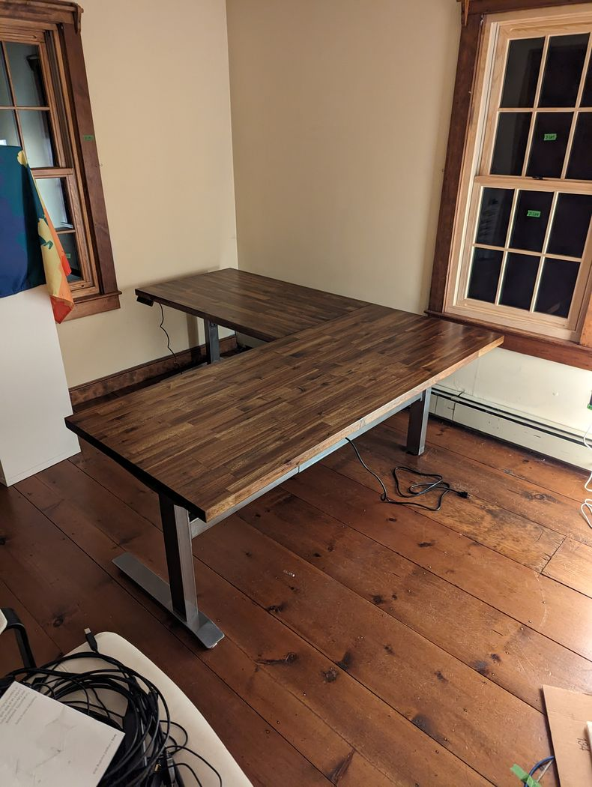

Standing Desk
2023
This standing desk built for my partner is an excellent example of my appreciation for 3D printing as a means for making cost-effective tooling. Rather than buying a hugely expensive joiner or luxury routing guide, I modeled and printed my own router guide that precisely locates mortises referenced to the desk's top surface. This let us securely and accurately join the two desktop pieces with loose tenons before fastening them together with pocket screws.
  